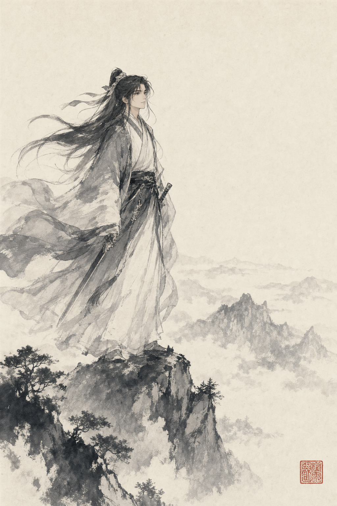

The Studio · Vol. 01
A small library of focused, single-purpose instruments — flashcards bound to the textbook on your shelf, stroke-order playback for any character you can paste in. Built slowly, kept honest, kept free.

今日一語 · Today's word
The sea of learning has no shore.
From a couplet attributed to the Tang scholar 韩愈 (Han Yu, 768–824). The full saying — 学海无涯苦作舟 — "the sea of learning has no shore; let toil be your boat" — has been a refrain for Chinese students for a thousand years. A useful thing to keep on the wall above a desk.
— On the studio
Each instrument does a single job and stops. No accounts, no streaks, no leaderboard. The textbook on your shelf already sets the curriculum.
Cards are bound to the exact vocabulary list of Hanyu Jiaocheng volumes 1A through 3B. The tool follows your study, not its own.
If we don't have stroke data for a character, we say so plainly. A short, true note is worth more than a generated GIF that's wrong.
No popovers, no notifications, no banner ads, no dark patterns. Cream paper, one accent, generous margins. Study in peace.